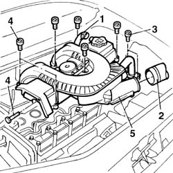

1016A22 cam cover with fuel duct - r + r and replace gasket
- Path
- Procedures > 10 ENGINE > 1016 CYLINDER HEAD(S) > 1016A cam covers > 1016A22 cam cover with fuel duct - r + r and replace gasket
- Kind
- repair procedure (removal / refitting; the operation number is the code)
- Applies to
- all engines; all production periods
- Interactive page
- https://sloeber94.github.io/elrnDB-fDbl/en/#/2584443
Applies to: all engines; all production periods
 Removing
Removing
 Refitting
RefittingOpen the bonnet lid.
1. Disconnect the engine oil vapour pipe from the tappet cover.
2. Disconnect the hose connected to the filter casing from the cover.
3. Undo the bolts fixing the exhaust gas supply pipe to the E.G.R. valve.
4. Unscrew the retaining bolts
5. Remove the tappet cover incorporating the inlet ducts.
Recover the underlying gasket.

Applies to: all engines; all production periods
Refitting
RemovingFit a new gasket to the cam cover.
Fit the tappet cover incorporating the inlet ducts, tightening the bolts to torque.
 | Fastening | Component | Ø | Value (daNm) |
|---|---|---|---|---|
- | Bolt | CAM COVER | M6 | 1 |
Connect the engine oil vapour pipe to the cam cover.
Connect the air hose connected to the filter casing to the cover.
Tighten the bolts fixing the exhaust gas supply pipe to the E.G.R. valve to torque.
| Fastening | Component | Ø | Value (daNm) |
|---|---|---|---|---|
- | Bolt | EGR VALVE PIPE | M8 | (EGR valve) 2.5 |
Close the bonnet lid.
Topics that link to this page (10)
- 1016C10 cylinder head - r + r and replace gasket
- 1028H20 piston with connecting rod - r r
- 1036H10 valve tappets - check and adjust clearance
- 1036H14 valve tappets - check clearance
- 1060B10 injectors - r + r
- 1072C10 exhaust manifold - r + r and replace seal
- 1072C44 exhaust manifold heat shield on bulkhead - r+r
- 1084B50 timing mount oil pipe - r r
- 1088D24 rigid pipe for coolant inlet to water pump - r + r
- 5520C10 glow plugs - r+r